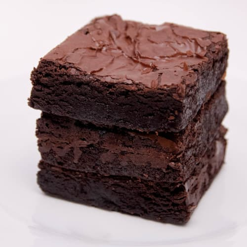

Chocolate Brownies Recipe
Description
These chocolate brownies are delicious. They are so moist and super easy to make. Use plain flour instead of self-rising flour if you would prefer less cake-like brownies.
Ingredients
- 190g white granulated sugar
- 115g butter (melted)
- 2 large eggs
- 65g self-raising flour
- 40g cocoa powder
- 1/4 teaspoon salt
- 1 teaspoon vanilla extract
Steps
- Preheat the oven to 175C (350F).
- Grease an 8x8 or 9x9 inch baking tin.
- Beat together sugar and butter in a bowl.
- Add eggs and mix well.
- Combine flour, cocoa powder, and salt in another bowl. Stir into the butter mixture.
- Mix in vanilla extract.
- Spread evenly into the prepared tin.
- Bake in the preheated oven for 25 to 30 minutes, until edges are firm.
- Cool before cutting into squares.